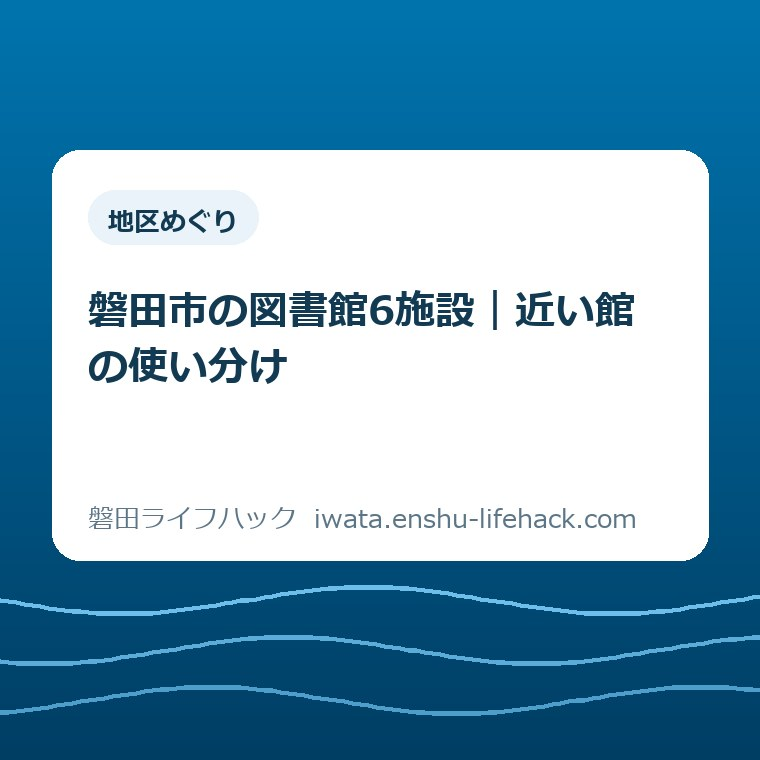

地区めぐり
磐田市の図書館6施設｜近い館の使い分け

この記事の要点
Q. 磐田市の図書館6施設は、どう使い分ければいい？
A. まず自宅から無理なく行ける館を選び、読みたい本が決まっていればウェブ予約で受取館を指定します。中央は資料と長い開館時間、にこっとは子育て、ながふじは平日昼の利用に向きます。9月は5施設で特別展示も確認できます。
導入——6施設は、優劣ではなく生活動線で選ぶ
磐田市の図書館を比べるとき、最初から蔵書数の多い館を探す必要はありません。家から歩けるか、車を停めやすいか、子どもと過ごせるか、仕事帰りに間に合うかで選ぶ方が、利用は続きます。
磐田市公式の「施設ガイド 図書館」は、中央図書館、福田図書館、竜洋図書館、豊岡図書館、ひと・ほんの庭 にこっと、ながふじ図書館の6施設を掲載しています。4館だけと思っていると、選択肢を二つ落とします。
この記事では、6施設の場所、時間、休館日、公式ページに書かれた特徴を、近い館を選ぶ材料として整理します。施設全体の入口は磐田市の公共施設・図書館・公園を探すページにもまとめています。開館状況やイベントは2026年9月4日に確認しました。

先に結論——近い館で借り、全館の仕組みで補う
磐田市の図書館利用は、近所の館を日常の入口にして、必要な本だけ全館のネットワークで取り寄せる形が現実的です。6施設を毎回比較してから出かけるより、基準の館を一つ決めた方が家族の予定に入りやすくなります。
「近い」とは、地図上の直線距離だけではありません。雨の日に歩けるか、坂を避けられるか、子どもを連れて待てるか、返却のついでに寄れるかまで含めた距離です。高齢の方なら、片道の距離より往復の負担で考えます。
読みたい本が決まっている場合は、磐田市立図書館の蔵書検索で探し、予約時に受取館を指定できます。窓口で「この館にないから無理」と終わらせず、全館の蔵書を確認してもらえる仕組みを使います。
図書は市内全館とにこっとのどこへでも返却できます。借りた館へ戻る用事が消えるだけで、使える館の範囲は広がります。CDやDVDは返却方法が異なるため、同じつもりで返さないでください。
6施設の違いを一枚で見る
磐田市内の6施設は、利用時間と立地の条件がそろっていません。次の表は、各館の公式施設ガイドと磐田市立図書館の利用案内を、2026年9月4日に照合したものです。
| 施設 | 地区・所在地 | 開館時間 | 選ぶ理由 |
|---|---|---|---|
| 中央図書館 | 磐田・見付3599-5 | 火〜金9:00〜19:00 土日祝9:00〜17:00 | 資料、展示、長い平日時間 |
| 福田図書館 | 福田・福田1552-1 | 火〜日9:30〜18:00 | 児童・子育て、時代小説、大活字本 |
| 竜洋図書館 | 竜洋・豊岡6605-3 | 火〜日9:30〜18:00 | 楽譜、音楽資料、視聴覚資料 |
| 豊岡図書館 | 豊岡・下野部48 | 火〜日9:30〜18:00 | 地域に根ざした小さな館 |
| にこっと | 豊田・上新屋304 | 火〜日9:30〜18:00 | 本と子育て相談、学習スペース |
| ながふじ図書館 | 豊田・加茂243 | 月〜金9:00〜16:15 | 学校と地域の接点、平日昼 |
この表だけで「中央が一番」と決めるのは早いです。中央は大きな資料拠点ですが、目的が絵本一冊なら、移動の短い福田やにこっとの方が家族には使いやすいことがあります。
中央図書館——資料を探す日と平日夕方に向く
中央図書館は、磐田市見付3599-5にある市内4館の中央館です。火曜から金曜は午前9時から午後7時まで、土曜・日曜・祝日は午前9時から午後5時まで開館しています。
公式施設ガイドは、延べ床面積3,560平方メートル、ワンフロアの開架室、赤松文庫、英語多読コーナー、健康医療コーナー、磐田市紹介コーナーを紹介しています。調べものを一つの館で進めたい方には、まず候補になります。
展示室、おはなしのへや、視聴覚ホールもあります。子ども向けの読み聞かせや映画会の日は、単に本を借りるだけでない使い方ができます。開催日は図書館のイベント情報で確認します。
一方、中央図書館は見付にあります。豊岡や福田から毎回通うと、往復の時間が本を借りる目的を上回ることがあります。車で見付へ出かける日の駐車場の考え方は、旧見付学校の駐車場と見学順を整理した記事も参考になります。中央を使う日は、調べもの、展示、複数冊の選書をまとめる日に寄せる方が無理がありません。
2026年9月4日時点では、磐田市立図書館のサイトに中央図書館の改修に伴うサービスの一時利用停止のお知らせが掲載されています。停止内容と期間は記事本文で決め打ちせず、訪問前に公式のお知らせを確認してください。
福田図書館——子どもと大活字本を同じ日に見る
福田図書館は、磐田市福田1552-1にあります。火曜から日曜の午前9時30分から午後6時まで開館し、月曜、祝日、年末年始、第4木曜、蔵書点検期間が休館です。
公式ページには、児童・子育て、ティーンズ向けのコーナーに加え、時代小説や大活字本をそろえているとあります。子どもの本を選ぶ家族と、文字の大きさを気にする高齢の方が、同じ館を使える構成です。
授乳室、ベビーカー、ベビーシートなどの設備も公式のバリアフリー情報に掲載されています。設備があることと、当日に使えることは別なので、具体的な場所や利用方法は館内で尋ねます。
福田地区の家族にとっては、子どもの本を返すついでに大人の本を借りる流れを作りやすい館です。子どもだけの場所と決めず、家族全員の本を一度に選ぶ場所として見ると、来館回数を減らせます。
福田図書館の休館日は中央図書館と同じではありません。月曜だけでなく祝日も確認が要るため、月曜以外なら開いていると考えない方が安全です。
竜洋図書館——本より楽譜を探す人にも入口がある
竜洋図書館は、磐田市豊岡6605-3の竜洋なぎの木会館内にあります。火曜から日曜の午前9時30分から午後6時まで開館し、駐車場はなぎの木会館と共用です。
公式施設ガイドが示す特徴は、ピアノを中心とした楽譜など音楽資料と視聴覚資料の充実です。図書館を小説と絵本だけの場所だと思っていると、この館の使い道を取りこぼします。
合唱、楽器、音楽の調べものをしたいときは、検索画面で書名だけでなく資料の種類も見ます。目的の資料が見つからなければ、窓口で全館の蔵書を確認してもらいます。
会館の催しと図書館の開館は同じではありません。駐車場を共用する施設なので、車で行く場合は会館の利用者がいる時間帯も考えます。混雑を断定できる資料は確認できていないため、余裕を持つという案内にとどめます。
竜洋図書館の第4水曜休館は、福田図書館の第4木曜休館と一日ずれています。家族の都合で水曜しか動けない場合は、竜洋を候補から外す日があることを先に覚えておきます。
豊岡図書館——小さな館を「足りない」と決めない
豊岡図書館は、磐田市下野部48にあります。火曜から日曜の午前9時30分から午後6時まで開館し、月曜、祝日、年末年始、第4水曜、蔵書点検期間が休館です。
延べ床面積は509平方メートルで、6施設の中では小さい部類です。公式ページは、旧豊岡支所西館を改修した施設で、地域に根ざしたアットホームな館と説明しています。
小さいことは、すべての本が並ぶという意味ではありません。反対に、入口から書架までの距離が短く、子どもや高齢の方が館内で迷いにくい可能性があります。ここは私の利用者目線の評価で、個別の混雑や接遇を確認した話ではありません。
公式ページでは松下大三郎文庫が紹介されています。地域の資料や特定の文庫を見たい日には、規模だけで中央を選ばず、豊岡の固有性を検索の入口にします。
豊岡駅から天竜浜名湖線で行く方法や、野部バス停から徒歩3分という案内もあります。車が使えない方にとっては、鉄道とバスの選択肢が見えること自体が判断材料です。
にこっと——本を借りる用事に、子育て相談を重ねられる
ひと・ほんの庭 にこっとは、磐田市上新屋304にある複合施設です。火曜から日曜の午前9時30分から午後6時まで開館し、本を借りるには利用者登録が必要です。
磐田市公式ページは、図書館機能と子育て支援・相談・市民交流・学びの支援を組み合わせた施設と説明しています。本を選びながら、子育ての小さな悩みを保育士に相談できる点が、4館とは違う使い道です。
1階の「くつろぎのま」と「みんなのま」には学習スペースがあります。学習専用室と同じ静けさを保証する情報ではないため、周囲への配慮が必要です。子どもが声を出すことも含め、場所の性格を理解して使います。
にこっとは豊田地区にあります。豊田地区で子育て中なら、図書館、相談、学習スペースを別々の日にするより、同じ外出にまとめる方が家族の移動を減らせます。子育ての相談先を図書館以外にも広げるときは、磐田市の子育て支援の入口から確認します。
休館日は月曜、第4木曜、年末年始、館内整理日です。月曜が祝日の場合は翌日以降の最初の平日が休館になる案内なので、祝日をまたぐ週はカレンダーを確認します。
ながふじ図書館——学校内にあるが、地域の人も借りられる
ながふじ図書館は、磐田市加茂243のながふじ学府小中一体校の校舎内にあります。月曜から金曜の午前9時から午後4時15分まで開館し、土曜・日曜・祝日、年末年始、資料点検日が休館です。
意外な事実は、学校図書館の建物内にあっても、ながふじ図書館の市立図書館資料は一般の方が借りられることです。学校用図書は借りられませんが閲覧でき、調べたいことは司書に相談できます。
平日の昼に動ける高齢の方、保護者、地域の読書利用者にとって、ながふじは候補になります。ただし、学校行事などで休館する場合があります。土日に家族で行く館としては、開館条件が合いません。
「学校の中だから入りにくい」と感じる方は、利用者としての入口を公式ページで確認してから電話で尋ねます。門や受付の案内は学校の状況で変わり得るため、私が一律の入り方を決めることはできません。
ながふじ図書館を含めると、磐田市の図書館は4館プラス2施設ではなく、生活の違う6つの入口として見えてきます。名前に図書館が付くかだけでなく、誰のための場所かを見ます。

共通の仕組み——館を変えても利用者カードは一つ
磐田市立図書館の利用案内では、磐田市内在住の方、市内在勤・在学の方などが利用者登録の対象です。中東遠地区の住民にも条件があります。対象と必要書類は登録時点の公式案内で確認します。
本、雑誌、CD、DVD、電子書籍を借りるには利用者登録が必要です。図書は一人10冊まで、CDやDVDなどは一人2点まで、いずれも2週間という案内があります。電子書籍は利用できる人の条件が別です。
予約は、読みたい本が書架に見当たらないときの手段です。各館で市内全館の蔵書を確認でき、ウェブサイトから資料を検索して予約できます。受取館を選べるので、在庫のある館まで取りに行く必要はありません。
予約資料の取り置きは、連絡日から1週間です。「いつか取りに行く」ではなく、連絡が来た日と受取館を家族の予定表に入れます。予約できる点数にも上限があるため、読みたい順を決めてから申し込みます。
返却は、市内全館・にこっとのどこでもできます。中央で借りて福田で返す、にこっとで借りて豊岡の近くで返す、といった使い方が可能です。AV資料はブックポストに入れず、開館日に窓口へ返します。
制度が一つに見えても、休館日と施設の性格は館ごとに違います。カードが共通だから、営業時間まで同じだと思わないことが、いちばん簡単な事故防止になります。
2026年9月の特別展示——5施設を回る理由がある
磐田市の「認知症月間」ページは、2026年9月の特別展示を市内図書館・にこっとで行うと案内しています。9月4日時点で掲載されている会場は、中央図書館、福田図書館、竜洋図書館、豊岡図書館、にこっとの5施設です。
中央図書館は2026年8月29日から9月24日、福田図書館は8月28日から9月30日です。竜洋図書館、豊岡図書館、にこっとは、いずれも9月1日から9月30日と掲載されています。
ここで注意したいのは、特別展示の掲載が6施設すべてではないことです。ながふじ図書館がこのページに載っていないからといって、館内の展示状況まで断定はできません。行く目的が展示なら、掲載ページと各館のお知らせを照らし合わせます。
9月は認知症の日と認知症月間にあたります。展示は本の紹介をきっかけに、家族が認知症について話す入口になります。相談や医療の個別判断を展示だけで済ませず、必要なら市の相談窓口へつなげます。
展示を見るために遠い館へ行くかは、家族の体力と交通手段で決めます。5施設を全部回ることが正解ではありません。近い館の展示日を一つ選び、気になる本があれば予約して別の館で受け取る方法もあります。
評価——良い点は、選べることと戻しやすいこと
良い点は三つあります。一つ目は、地区ごとに入口があることです。磐田、福田、竜洋、豊岡、豊田に施設が分かれ、南北に長い市内で毎回中央へ集まらずに済みます。
二つ目は、6施設の性格が少しずつ違うことです。中央は資料と展示、福田は児童・子育てと大活字本、竜洋は音楽、豊岡は地域の文庫、にこっとは子育て支援、ながふじは学校と地域の接点があります。
三つ目は、予約と返却の自由度です。近い館で受け取り、別の館で返せる仕組みは、図書館を「その館へ行く用事」から「生活の途中で使うサービス」に変えます。
これは市民の家計にも効きます。車で片道20分遠い館へ毎週行くより、近い館で受け取り、返却だけ別の日の外出に重ねる方が、燃料代と時間を抑えられます。正確な差額は家庭の車種と経路で変わるため、ここでは考え方として示します。
注文したい点——6施設の差を、初めての人にも一枚で見せてほしい
注文したい点は、施設一覧だけでは比較に必要な情報が散らばることです。6施設がある事実は一覧でわかりますが、開館時間、休館日、得意分野、一般利用の条件を横並びで見るには、個別ページを何度も開く必要があります。
一事業者としては、公式サイトの施設一覧に「平日夜まで」「子育て相談」「大活字本」「音楽資料」「学校内・平日昼」といった短い目印があると助かります。新しい施設を作る注文ではなく、すでにある情報の見せ方への要望です。
もう一つは、臨時休館や改修によるサービス停止の案内です。図書館サイトには新しいお知らせが出ますが、初めての人は個別ページから入ることがあります。訪問直前に確認する場所を、施設ページから見つけやすくしてほしいと感じます。
ただし、ここで市を一方的に責めるつもりはありません。6施設の個別ページと図書館サイトの利用案内が公開されているからこそ、比較記事を書けます。公開情報があることを先に評価し、その上で暮らし側の見つけやすさを注文します。
対案・結論——家から一番近い館を、まず一つ決める
対案は、6施設を一気に攻略しないことです。最初に家から一番行きやすい館を一つ決め、読みたい本がなければ予約で補います。施設の違いを知ることは、遠くへ通うためではなく、近い生活動線を使うためにあります。
子育て世帯なら、にこっとか福田を候補にします。調べものや展示を見たい日は中央、音楽資料なら竜洋、地域の文庫や公共交通なら豊岡、平日昼に静かに本を探すならながふじを見ます。
これは一般的な選び方です。ご家族の住所、交通手段、体調、学校行事、資料の状態で適した館は変わります。ながふじの利用条件や中央図書館の改修情報も含め、最後は磐田市公式ページと磐田市立図書館の最新案内で確認してください。
確認する順番——出かける前に3分で決める
- 目的を一つに絞ります。本を借りる、予約本を受け取る、子どもと過ごす、展示を見る、調べものをする、のどれかを書きます。
- 地図で近い館を二つまで候補にします。歩き、車、バス、鉄道のうち、当日使える移動手段で往復の負担を比べます。
- 公式ページで開館時間、休館日、臨時のお知らせを確認します。ながふじは学校行事、中央は改修関連の案内も見ます。
- 本が決まっているなら蔵書検索を使い、受取館を選んで予約します。取り置きの連絡が来たら、1週間の期限を家族で共有します。
- 返却先を先に決めます。借りた館に戻る必要はありませんが、CD・DVDは開館日に窓口へ返す条件を忘れません。
家族で共有するための記録——館名より、使った理由を書く
図書館カードを持つ人が一人だけだと、予約本の受取期限や返却場所が家族に伝わりません。スマートフォンの予定に「9月12日、福田図書館で受取」「9月25日、中央図書館で返却」と残します。
記録する項目は、館名、住所、開館時間、休館日、駐車場の有無、予約本の受取日、返却する館です。すべて覚える必要はありません。次に同じ用事が起きたとき、検索し直す時間を減らすためのメモです。
高齢の家族が使う場合は、文字の大きさ、椅子までの距離、トイレの場所、帰りの交通手段を確認します。公式ページのバリアフリー情報は入口ですが、体調に合うかは当日の本人の感覚を優先します。
子どもと使う場合は、読みたい本を一冊に決めなくてかまいません。にこっとや福田で子どもの本を選び、保護者の本は予約で別の館から取り寄せるようにすると、選書の時間を分けられます。
施設の比較は、家族を急かすための表ではありません。外出が負担になる日には電子書籍や予約だけを使い、来館を後日に回す選択も残します。
大石の視点——図書館は、遠くの一番大きい館へ通う競争ではない
ここからは体験ストックにある具体的な出来事ではなく、私の意見として書きます。不動産の相談では、同じ磐田市内でも「すぐそこ」と「毎回は遠い」の差が、生活の継続を左右します。図書館も同じです。
私は、図書館を使う人に「中央へ行けば間違いない」と案内したくありません。中央の資料機能は頼りになりますが、返却のたびに遠出が必要なら、借りる回数が減るからです。近い館を普段使いにして、必要なときだけ中央を使う方が、暮らしには合います。見付地区で文化財も合わせて見るなら、磐田市の埋蔵文化財届出を地番と地図から整理した記事へつながります。
行政は、施設を建てたかどうかだけで評価するものではありません。市民が自分の時間とお金で使い続けられるかまで見て、良い点と注文を分けて考えます。6施設と全館予約・返却の仕組みは、使い続けるための土台として良いものです。
一方で、私は6施設を同じ使い方にそろえる必要もないと思っています。地域の違い、建物の役割、学校との接点、子育て相談の有無が残っているからです。比較表は差を消すためではなく、差を選べるようにする道具です。
迷いもあります。施設が多いほど選択肢は増えますが、初めての人には情報量が増えます。6施設を紹介する記事を書きながら、最後は「近い館を一つ」でよいと書くのは、その迷いがあるからです。
今日できる一歩は、磐田市立図書館の蔵書検索を開き、家から近い館を受取館として一つ登録してみることです。予約する本がなくても、休館日と開館時間だけ家族の予定表に入れれば、次の外出が決めやすくなります。
まとめ——近い館を入口に、6施設を必要な分だけ使う
磐田市の図書館6施設は、中央図書館、福田図書館、竜洋図書館、豊岡図書館、にこっと、ながふじ図書館です。開館時間、休館日、場所、施設の役割が違うため、家族の目的に合わせて選びます。
近い館に読みたい本がなくても、全館の蔵書検索、予約、受取館指定、全館返却で補えます。遠い館へ毎回行く前に、近い館を入口にする順番を試します。
2026年9月は、磐田市公式の認知症月間ページで5施設の特別展示が案内されています。展示の会場や期間、中央図書館のサービス状況は変わる可能性があるため、訪問直前に公式情報を確認します。
施設の利用条件、休館日、予約できる資料、個別の配慮は人によって変わります。この記事だけで決めず、最後は磐田市公式ページと磐田市立図書館の最新案内を確認してください。
- 6施設は中央、福田、竜洋、豊岡、にこっと、ながふじ。
- 普段は近い館、必要な本は全館予約、返却は別の館でもよい。
- 2026年9月の特別展示は公式ページで会場と期間を確認する。
参考にした公式情報
- 施設ガイド 図書館／磐田市（2026年9月4日確認）
- 施設ガイド 中央図書館／磐田市（2026年9月4日確認・ページ更新日2024年8月29日）
- 施設ガイド 福田図書館／磐田市（2026年9月4日確認・ページ更新日2024年8月29日）
- 施設ガイド 豊岡図書館／磐田市（2026年9月4日確認・ページ更新日2025年5月12日）
- 施設ガイド 竜洋図書館／磐田市（2026年9月4日確認・ページ更新日2024年8月29日）
- 施設ガイド ひと・ほんの庭 にこっと／磐田市（2026年9月4日確認・ページ更新日2026年8月7日）
- 施設ガイド ながふじ図書館／磐田市（2026年9月4日確認・ページ更新日2024年8月29日）
- 利用案内／磐田市立図書館（2026年9月4日確認）
- 各種サービス／磐田市立図書館（2026年9月4日確認）
- 認知症月間／磐田市（2026年9月4日確認・ページ更新日2026年8月31日）

最終確認日：2026-09-04 ／ 本記事は公表情報と執筆者の見解を分けて記載しています。施設情報、開館時間、休館日、展示期間、予約条件は変更される場合があります。個別条件は異なるため、訪問前に必ず磐田市公式ページと磐田市立図書館の最新案内をご確認ください。